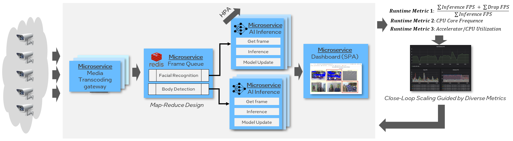

Welcome to Cloud Native AI Pipeline’s documentation!¶
Cloud Native AI Pipeline provides a multiple-stream, real-time inference pipeline based on cloud native design pattern as following architecture diagram. Cloud-native technologies can be applied to Artificial Intelligence (AI) for scalable application in dynamic environments such as public, private and hybrid cloud.
It is extended for the following uses:
End-to-End Macro Bench Framework for cloud native pipeline like DeathStar Bench
Trusted AI pipeline to protect input stream or model in TEE VM/Container
Sustainable AI computing to reduce carbon footprint for AI workloads
Contents: